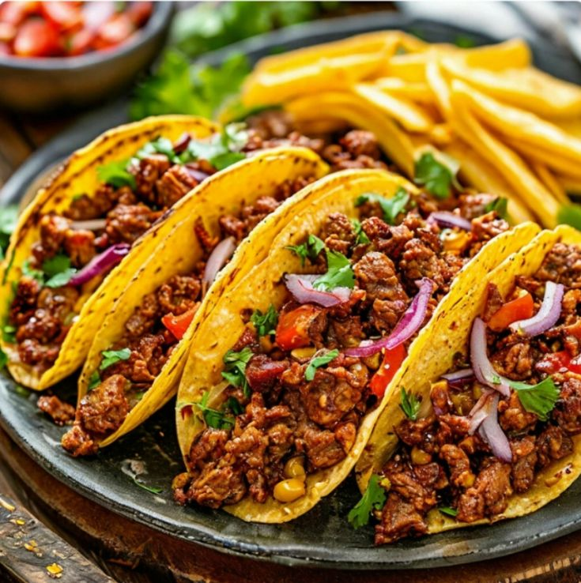
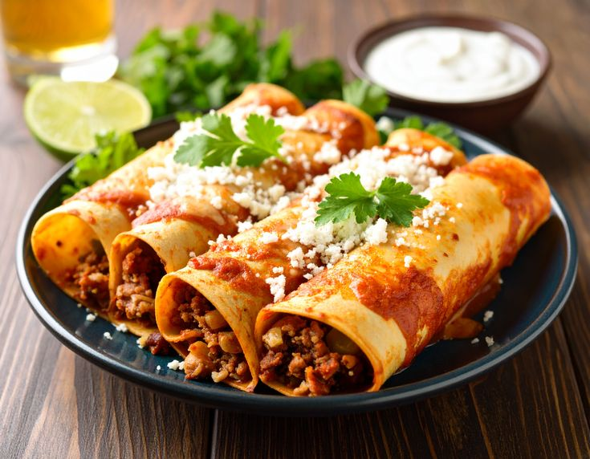
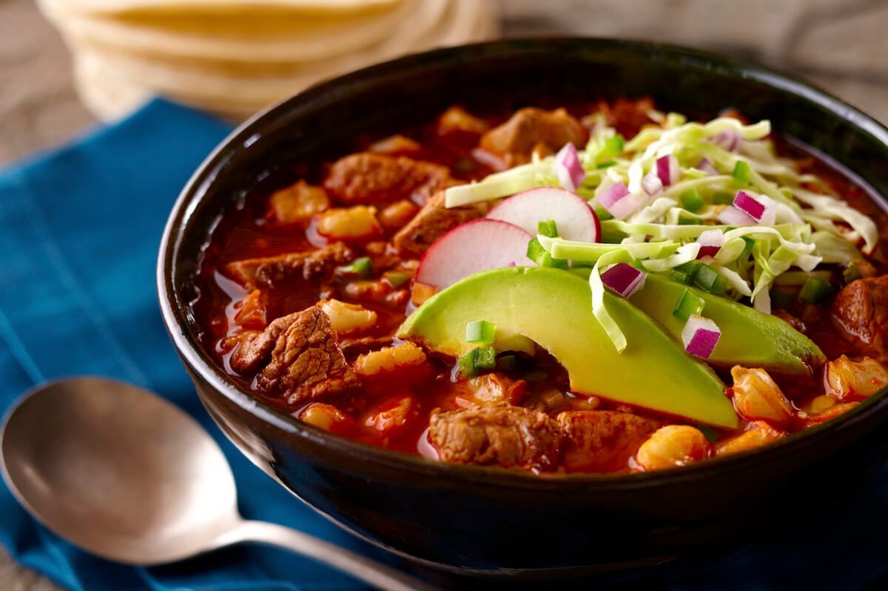

Мексиканская кухня — одна из богатейших кухонь мира. Она сочетает
древние традиции ацтеков и майя с испанским влиянием. Основу составляют
кукуруза, фасоль, перец чили, томаты и авокадо. Познакомься с самыми
известными блюдами Мексики!


Энчиладас
Рулетики из кукурузных лепёшек с начинкой, запечённые под острым томатным соусом.
Подробнее
Гуакамоле
Закуска из спелого авокадо с лаймом, луком, томатами и кинзой. Подают с чипсами.
Подробнее


Начос
Хрустящие кукурузные чипсы с расплавленным сыром, халапеньо и соусом. Идеальная закуска.
ПодробнееРахимова ИС 4-2